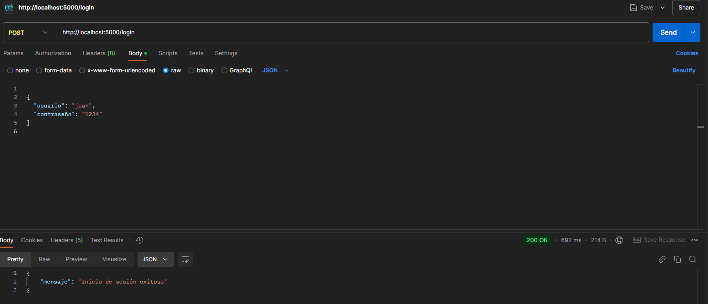
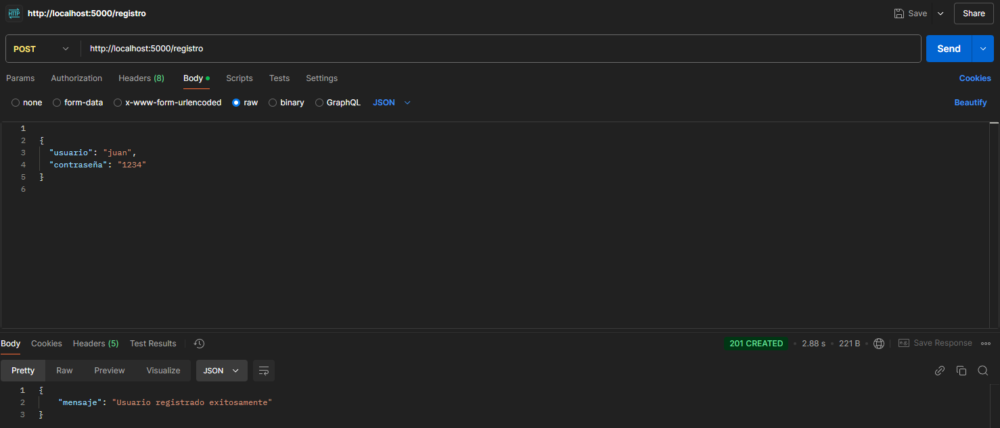
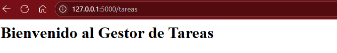

Proyecto: Sistema de Gestión de Tareas
API REST en Flask para registro, login y tareas, con SQLite y hash de contraseñas. 👇
📋 Endpoints
- POST /registro
- POST /login
- GET /tareas
💻 Capturas de pantalla



▶️ Instrucciones para Ejecutarlo
pip install flask werkzeug
python servidor.py